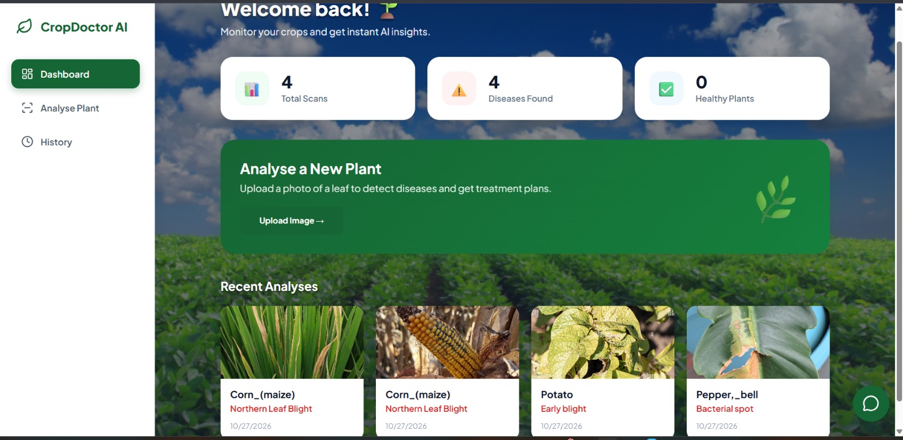
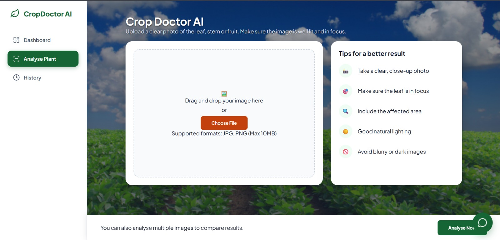
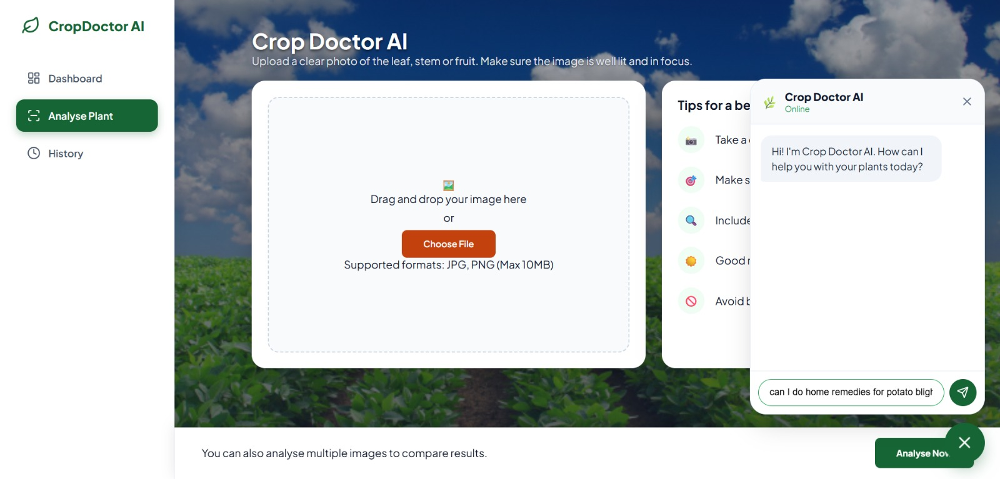
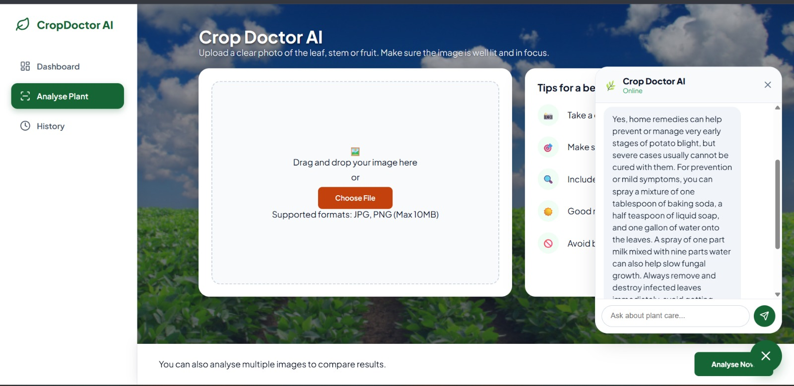
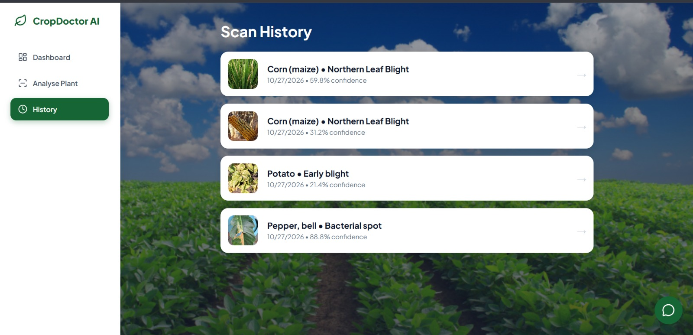
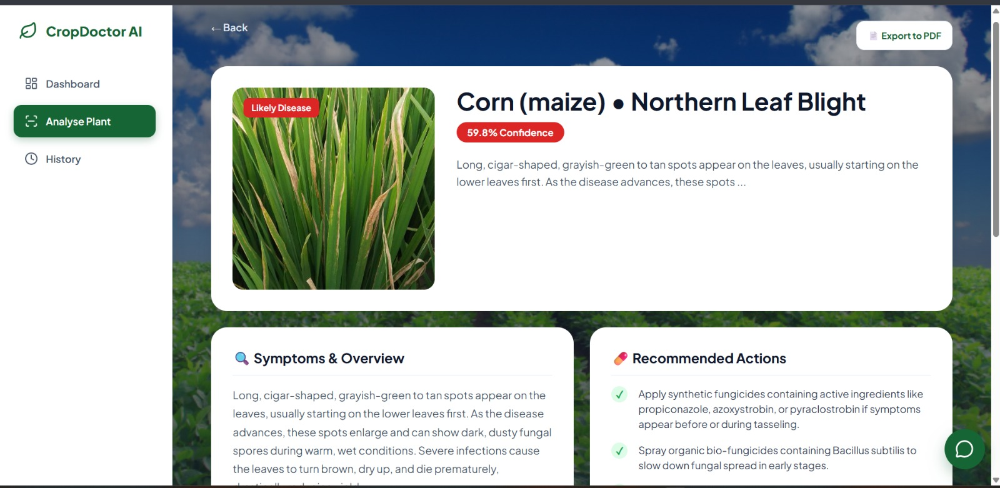

About Me
I am a driven third-year Application Development student with a strong work ethic and the ability to perform well under pressure. I take pride in delivering my best work and continuously improving my skills. As a fast learner, I am eager to contribute meaningfully while growing professionally in a challenging environment.
Education
Belhar High School
Matric
2020
Samsung Future Innovation Lab
Digital and Social Innovation
2022
Cape Peninsula University of Technology
Higher Certificate in ICT
2023
Cape Peninsula University of Technology
National Diploma in Application Development
2024 – current
Projects
Student Budgeting Website
- Team-built project
- Budgeting, expense tracking and reports
- Built with HTML, CSS and JavaScript
NSFAS Redesign Prototype
- Figma wireframes
- Usability-focused redesign
Work Experience
Shop Assistant
Toy Kingdom
2021
- Customer assistance
- Stock replenishment
- Merchandising
Skills
References
Mr Grove
Samsung Future Innovation Lab
076 449 2227
Mr Faizel
Tygervalley Centre, Bellville
(021) 914 0444
Markdown Language
Reflection · STAR method
Situation
As part of my studies, I was asked to create my CV in Markdown language for potential employers. This experience helped me understand how to present information clearly. I can apply that skill to future documentation.
Task
Produce a clear, professional CV using only Markdown formatting. This experience helped me understand how to present information clearly. I can apply that skill to future documentation.
Action
I learned and applied headings, lists and text formatting to structure my CV. This experience helped me understand how to present information clearly. I can apply that skill to future documentation.
Result
Markdown was easier to use than I expected. The final appearance was less visually advanced than I had imagined, which taught me its limits as a formatting tool. This experience helped me understand how to present information clearly. I can apply that skill to future documentation.
Mock Interview
Reflection · STAR method
Situation
I recorded and edited a mock interview video to practise for future job interviews. This gave me an opportunity to practise communicating with confidence. I can use the feedback to prepare for real interviews.
Task
Present myself professionally on camera, then review the recording critically. This gave me an opportunity to practise communicating with confidence. I can use the feedback to prepare for real interviews.
Action
I recorded the interview, edited the video, and watched it back to assess my performance. This gave me an opportunity to practise communicating with confidence. I can use the feedback to prepare for real interviews.
Result
Reviewing it helped me identify body-language habits and areas to improve in future interviews. This gave me an opportunity to practise communicating with confidence. I can use the feedback to prepare for real interviews.
Using GitHub Pages
Reflection · STAR method
Situation
I needed to put my CV online, and it was my first time using GitHub Pages. This helped me become more comfortable with publishing web content. I can apply what I learned when updating my portfolio.
Task
Deploy my CV so employers could view it through a live link. This helped me become more comfortable with publishing web content. I can apply what I learned when updating my portfolio.
Action
I followed the setup steps and, when problems came up, worked through them with help from my classmates. This helped me become more comfortable with publishing web content. I can apply what I learned when updating my portfolio.
Result
My CV was deployed, and I gained a better understanding of hosting and deployment. This helped me become more comfortable with publishing web content. I can apply what I learned when updating my portfolio.
Project — Crop Doctor AI
Crop Doctor AI is a plant-disease diagnosis PWA built with React/Vite, Python FastAPI, ResNet50 and DenseNet121, and Gemini-generated treatment and prevention guidance. The supplied project README also describes a chatbot, PDF export and mobile-first PWA functionality.
Agile Portfolio
Explore the evidence ↓Agile Team Charter
A shared purpose, working agreements, roles and a definition of done.
| Charter section | Summary |
|---|---|
| Team purpose & vision | Build Crop Doctor AI, a Progressive Web App that lets farmers and gardeners diagnose plant diseases from a photo of a leaf and get a full treatment plan. |
| Product | Crop Doctor AI: a mobile-first PWA using a ResNet50 + DenseNet121 ensemble and the Google Gemini LLM. |
| Success definition | A user can upload or take a leaf photo and receive a diagnosis with treatment and prevention advice. |
| Agile framework | Kanban, managed with Trello. |
| Working agreements | Show up prepared and on time; respect timeboxes; give constructive feedback; raise blockers early; commit to continuous improvement. |
| Definition of done | Code completed and reviewed; tests passed; documentation updated; Product Owner acceptance; deployed to the agreed environment. |
| Core values | Respect, Transparency, Accountability, Trust, Learning mindset. |
| Risks & constraints | Models trained on lab images can fail on real-world field photos (the “lab-to-field gap”); advice depends on the Gemini API; trained models and datasets are large and kept out of git. |
Agile Team Charter document
Crop Doctor AI Agile Team Charter — updated
Reflection · STAR method
Situation
Our Crop Doctor AI project brought together a team to design a tool for identifying plant diseases from leaf photographs. Because the project involved frontend development, AI models and a backend API, clear teamwork was important. A team charter helped establish shared expectations.
Task
The team needed to agree on its purpose, responsibilities and working arrangements. We also needed a common understanding of what successful delivery would look like. This gave us a foundation for planning our work.
Action
We outlined the project vision, working agreements and expectations for communication. We considered the risks of diagnosing diseases from real-world photographs and depending on external AI services. We also documented a definition of done to guide reviews.
Result
The charter provided a reference point for how the team should collaborate. It made expectations clearer and highlighted potential risks early. I learned that agreeing on a process is just as important as deciding what to build.
User Stories & Tasks
| ID | User story | Tasks | Priority |
|---|---|---|---|
| US-01 | Upload or take a leaf photoAs a farmer or gardener, I want to upload or take a photo of a leaf so that I can get a diagnosis. | Build upload / camera component in React Send the image to the FastAPI endpoint with Axios Validate the image file | Must |
| US-02 | Reliable disease predictionAs a user, I want an accurate prediction, even from messy real-world photos, so that I can trust the result. | Merge PlantVillage and PlantDoc data Train ResNet50 and DenseNet121 with transfer learning Average both models’ predictions Return the disease label and confidence | Must |
| US-03 | Treatment and prevention adviceAs a user, I want a simple diagnosis, treatment plan and prevention strategy so that I know what to do next. | Integrate the Gemini API Generate symptoms, treatment and prevention text Show the result on the Result page | Must |
| US-04 | Follow-up questionsAs a user, I want to ask Crop Doctor AI questions about the disease so that I understand my result better. | Build the floating chatbot component Connect the chat to Gemini | Should |
| US-05 | Save a PDF reportAs a user, I want to export my diagnosis and treatment plan as a PDF so that I can keep it for later. | Generate a clean PDF report Add an export button on the Result page | Should |
| US-06 | Use the app on my phoneAs a mobile user, I want to install the app on my home screen so that I can use it like a native app. | Configure Vite PWA Build responsive layout (sidebar on desktop, bottom nav on mobile) Test on iOS and Android | Should |
| US-07 | Review past diagnosesAs a user, I want to see my previous diagnoses so that I can refer back to them. | Build the History page Store and list past results | Could |
Reflection · STAR method
Situation
Crop Doctor AI needed to solve a practical problem for farmers and gardeners who may not have quick access to agricultural specialists. We had to translate the technical features into understandable user needs. User stories helped us focus on the people who would use the application.
Task
The goal was to describe each feature from the user’s perspective. Each story also needed smaller tasks that could be planned and tracked. Priority labels helped separate essential diagnosis features from optional improvements.
Action
I used the project requirements to structure stories around uploading a photo, predicting disease and receiving treatment guidance. I then broke the stories into tasks such as creating the React upload component, connecting FastAPI and integrating Gemini. I organised the stories using Must, Should and Could priorities.
Result
The resulting stories made the requirements easier to understand and divide into development tasks. They also showed how frontend, backend and AI work fit together. This taught me to describe the value of a feature before focusing on its implementation.
Product Backlog
| ID | Backlog item | Type | Priority |
|---|---|---|---|
| PB-01 | Image upload and camera capture | Feature | Must |
| PB-02 | Merge PlantVillage and PlantDoc datasets | Data | Must |
| PB-03 | Train ResNet50 and DenseNet121 models | Machine learning | Must |
| PB-04 | Ensemble prediction (average both models) | Machine learning | Must |
| PB-05 | FastAPI backend serving the models | Backend | Must |
| PB-06 | Gemini diagnosis, treatment and prevention advice | Feature | Must |
| PB-07 | Result page showing diagnosis and plan | Feature | Must |
| PB-08 | AI follow-up chatbot | Feature | Should |
| PB-09 | Export diagnosis to PDF | Feature | Should |
| PB-10 | Installable PWA (iOS and Android) | Feature | Should |
| PB-11 | Responsive layout: sidebar and bottom navigation | Feature | Should |
| PB-12 | History page of past diagnoses | Feature | Could |
Reflection · STAR method
Situation
The Crop Doctor AI README describes several features, from leaf diagnosis to PDF reports and a chatbot. These could not all have the same priority when planning the core product. A product backlog was needed to organise the scope.
Task
The task was to identify the work required for the application and place it in a sensible order. The most important goal was a complete flow from photo upload to diagnosis and treatment advice. Additional features could follow after that core flow.
Action
I grouped the work into data preparation, model development, backend integration and user-facing features. I prioritised photo upload, ensemble prediction and Gemini advice as Must-have items. Chat, PDF export and mobile installation were classified as Should-have, while diagnosis history was placed lower.
Result
The prioritised backlog gives the team a clear order for planning work. It also makes trade-offs easier when time or resources are limited. I learned that a useful backlog is not just a list of features but a way to protect the project’s main goal.
Sprint Backlog
Sprint goal
Goal 1
Upload a leaf photo
Goal 2
Receive a disease prediction
Goal 3
See treatment and prevention advice
Sprint tasks
| ID | Sprint task | User story |
|---|---|---|
| ST-01 | Build upload and camera component | US-01 |
| ST-02 | Connect the frontend to the FastAPI endpoint with Axios | US-01 |
| ST-03 | Merge PlantVillage and PlantDoc datasets | US-02 |
| ST-04 | Train ResNet50 and DenseNet121 | US-02 |
| ST-05 | Combine both models in the ensemble prediction | US-02 |
| ST-06 | Integrate the Gemini advisor | US-03 |
| ST-07 | Show diagnosis, treatment and prevention on the Result page | US-03 |
| ST-08 | Test the full flow and prepare the demo | All |
Reflection · STAR method
Situation
The project required several connected parts to deliver one useful diagnosis experience. A sprint backlog was prepared around the essential user stories rather than every possible feature. The uploaded portfolio does not establish the actual sprint duration or completion dates.
Task
The proposed sprint goal was to let a user upload a leaf photograph, receive a disease prediction and view treatment advice. The work needed to cover the React interface, FastAPI connection, model ensemble and Gemini response. Testing the full flow was included as a final task.
Action
I linked sprint tasks to the Must-have user stories and arranged them in a logical implementation order. The plan starts with image capture and data/model preparation, then moves to API integration and results display. The Trello board can be used to record actual owners, dates and task progress.
Result
This sprint plan provides a focused scope and a way to check whether the core workflow is ready. Actual completion and a burndown chart still require dated task records, so they should not be presented as verified outcomes. I learned that sprint planning works best when progress can be measured against a specific goal.
Crop Doctor AI — Trello Screenshots
Select either screenshot to view it at full size. The Trello board links are available below each screenshot.
Product Backlog

Sprint Backlog

Agile Logbook
Agile Logbook document
PRP37XS_Agile_Logbook_Template.docx
Crop Doctor AI · Tuesday–Friday logbook (Trello-based draft)
These are suggested daily entries aligned with the Trello cards dated 15–18 September 2026. Trello shows task dates and checklists, but does not independently establish what happened in each stand-up. Confirm the entries before submitting them as actual records.
| Date | Work focus / progress to record | Next steps | Blockers / notes |
|---|---|---|---|
| Tue, 15 Sep 2026 | Project Planning & Requirements (4/4 checklist items on the Trello screenshot). | Review the planned frontend screens and interface requirements. | Confirm any scope changes with the team. |
| Wed, 16 Sep 2026 | Design Frontend Interface (4/4) and Set Up FastAPI Backend (5/5), as recorded on Trello. | Prepare the disease-detection model integration and frontend-to-API connection. | Check API routes and model file availability. |
| Thu, 17 Sep 2026 | Integrate AI Disease Detection Models (5/5), Integrate Gemini AI Recommendations (5/5), and Connect Frontend and Backend (5/5), according to Trello. | Check the end-to-end diagnosis workflow and supporting features. | Verify model output and Gemini responses with test inputs. |
| Fri, 18 Sep 2026 | Add Supporting Features (4/4) and Test and Present the Application (6/6), as shown on Trello. | Document feedback, outstanding defects and possible improvements. | Record any issues found during testing or presentation. |
Reflection · STAR method
Situation
The Crop Doctor AI project involved work across interface development, model predictions and generated advice. Tracking progress and obstacles would help keep these related tasks visible. An Agile logbook provides a place to record that information over time.
Task
The logbook should capture work completed, upcoming tasks and any blockers at each check-in. It should also connect progress to the sprint backlog. The uploaded file does not include the actual dated stand-up entries.
Action
I prepared the logbook section to support entries about frontend work, API integration, model development and testing. Each entry can note what changed, what needs attention and which task is affected. Dated records and screenshots should be added from the real team activity.
Result
A consistently maintained logbook can reveal delays and make team communication more transparent. It can also provide evidence of how issues were addressed during development. This section remains a reflective draft until actual meeting records are supplied.
Crop Doctor AI — PowerPoint Presentation
This presentation covers the plant disease diagnosis problem, the proposed solution, and the project’s technical approach using ResNet50, DenseNet121, FastAPI and Gemini. It also provides a place to document the team’s demonstration and key learning outcomes. Download the complete Crop Doctor AI PowerPoint presentation below.
Crop Doctor AI Presentation
PowerPoint presentation · 9 slides
Crop Doctor AI — Application Screenshots
Screenshots of the Crop Doctor AI application. Click any image to open it at full size.






HandyHub — eWIL Project
People of Belhar. Building Belhar.
HandyHub is a proposed community-focused digital platform that connects Belhar residents who need home repairs with local skilled workers. The project responds to difficulties finding trustworthy plumbers, electricians, painters and other service providers, while helping skilled residents find work. Its proposed features include verified worker profiles, service-category search, reviews, past-work photos and direct job requests.
Our presentation reports a survey of 27 Belhar residents: 96.3% reported difficulty finding reliable providers, and all respondents indicated they would use a trusted-provider app or website. A Figma prototype was designed for MVP validation; the full mobile app and serverless architecture are presented as future implementation plans rather than completed software.
Team
Andile Pamela Masina — Product Owner and Agile Lead
Olona Metia Williams — Developer / Designer
Zahrah Vermaak — Developer / Analyst / Tester
Proposed technology
React Native, TypeScript, Firebase Authentication, Cloud Firestore, Cloud Functions, Cloud Storage and Google Maps API.
Planned post-MVP architecture, not verified as implemented.
Business model
Local job matching, reviews and trusted worker profiles; possible revenue from job commissions, premium listings and local advertising.
HandyHub — PowerPoint Presentation
Our HandyHub presentation explains the community problem, resident survey findings, service marketplace concept, proposed technology stack, business feasibility and MVP validation targets. The slides are included as an original project artifact and can be downloaded below.
View HandyHub GitHub Repository
01 · Agile Team Charter
Our team charter sets out HandyHub's purpose: to connect Belhar residents with reliable local workers and create more opportunities for skilled people in the community. The team used a Kanban approach with Trello, daily stand-ups, weekly planning and retrospectives, and sprint-end demonstrations. We agreed to communicate through WhatsApp, Microsoft Teams and email, raise blockers early, and only consider work done after review, testing, documentation and Product Owner approval.
| Area | Agreed approach |
|---|---|
| Purpose | Build a platform to find, review and hire local skilled workers. |
| Team roles | Andile: Product Owner / Agile Lead; Olona: Developer / Designer; Zahrah: Developer / Analyst / Tester. |
| Working method | Kanban in Trello, daily stand-ups, weekly planning and retrospectives. |
| Definition of done | Reviewed code, working features, successful testing, updated documentation, approval and demonstration readiness. |
| Risks | Academic workload, limited time and budget, technical challenges and reliance on tools and internet access. |
02 · User Stories & Tasks
These user stories translate the documented HandyHub concept into testable requirements. The priorities are proposed for planning and do not imply that the full features have been developed. Each story describes a resident or worker need and the tasks required to deliver it.
| ID | User story | Tasks / acceptance criteria | Priority |
|---|---|---|---|
| HH-US-01 | As a resident, I want to register and sign in so that I can safely request services. | Design registration and sign-in screens; validate required details; define resident account flow. Accept when a resident can create and access an account. | Must |
| HH-US-02 | As a worker, I want to create a profile listing my skills so that residents can discover my services. | Design worker profile; capture skills, service categories and contact details; plan profile storage. Accept when a worker profile can be viewed. | Must |
| HH-US-03 | As a resident, I want to search workers by service category so that I can find help for a specific repair. | Define categories such as plumbing and painting; design search and results; test filter usability. Accept when relevant workers can be found by category. | Must |
| HH-US-04 | As a resident, I want to view reviews and photos of previous work so that I can judge a worker's reliability. | Design rating/review display and photo gallery; plan moderation and storage. Accept when profiles clearly show available reviews and photos. | Must |
| HH-US-05 | As a resident, I want to send a job request so that a worker can respond to my service need. | Design request form, job details and status flow; define worker notifications. Accept when a request can be submitted and viewed by the worker. | Must |
| HH-US-06 | As a worker, I want to receive and respond to job requests so that I can find local work. | Design incoming requests and response actions; plan notifications. Accept when a worker can see and respond to a request. | Should |
| HH-US-07 | As a resident, I want to see whether a worker has been verified so that I can make a more informed hiring decision. | Define verification criteria; design verification indicator and review process. Accept when verification status is clearly explained. | Should |
| HH-US-08 | As a resident with limited data, I want a simple mobile-friendly experience so that I can access HandyHub affordably. | Design mobile-first screens; explore WhatsApp-first and low-data flows; conduct usability checks. Accept when core prototype screens are usable on mobile. | Should |
03 · Product Backlog
The product backlog separates essential marketplace functions from improvements planned for later development. Registration, worker profiles, search, trust indicators and job requests have the highest priority because they support the main resident-to-worker journey. Notifications, richer verification and low-data enhancements can be refined through feedback from prototype testing.
| Backlog ID | Item | Priority | Stage |
|---|---|---|---|
| HH-PB-01 | Resident and worker account flows | Must | Planned feature |
| HH-PB-02 | Worker profiles and skills | Must | Planned feature |
| HH-PB-03 | Category search | Must | Planned feature |
| HH-PB-04 | Ratings, reviews and work photos | Must | Planned feature |
| HH-PB-05 | Job request flow | Must | Planned feature |
| HH-PB-06 | Worker response and notifications | Should | Planned feature |
| HH-PB-07 | Verification workflow | Should | Planned feature |
| HH-PB-08 | Low-data/mobile-friendly experience | Should | Prototype validation |
| HH-PB-09 | Premium listings and job commissions | Could | Business-model concept |
04 · Sprint Backlog & Sprint Plan
Proposed sprint goal: Prepare and validate a usable HandyHub prototype showing how a Belhar resident can find a local worker and request help. The plan focuses on prototype and research work because the presentation describes the full mobile application as a future phase. Dates, task owners and completion statuses must be confirmed against the team's actual Trello board before presenting this as a historical sprint record.
| Task | Planned deliverable | Linked story |
|---|---|---|
| HH-ST-01 | Review community survey findings and prioritise needs | All |
| HH-ST-02 | Design resident and worker onboarding screens in Figma | HH-US-01, 02 |
| HH-ST-03 | Design worker search and category browsing | HH-US-03 |
| HH-ST-04 | Design profile reviews and previous-work photos | HH-US-04, 07 |
| HH-ST-05 | Design the job request journey | HH-US-05, 06 |
| HH-ST-06 | Collect feedback on the prototype and document improvements | All |
Burndown chart: add actual daily remaining-task counts from Trello when available. No progress figures are fabricated here.
05 · Agile Logbook
My four HandyHub Agile logbooks document daily progress, planned work and challenges from July to August 2026. Open or download the original Word documents below.
Overall Reflection — Crop Doctor AI & HandyHub
Reflection · STAR method
Situation
During my Agile portfolio, I worked on two different projects: Crop Doctor AI and HandyHub. Crop Doctor AI focused on using artificial intelligence to diagnose plant diseases and provide treatment advice, while HandyHub focused on connecting Belhar residents with reliable local service providers. Working on both projects gave me experience with projects that had different users, goals and technical requirements.
Task
My responsibility was to contribute to the planning, research, testing and documentation of the projects while following Agile practices. I had to help break the work into user stories, product backlog items and sprint tasks, and keep track of progress using tools such as Trello and the Agile logbook. I also had to work with my team members, communicate progress and make sure that our project information was organised clearly for presentations and portfolio evidence.
Action
For Crop Doctor AI, I worked with the team to organise the development tasks around the frontend, FastAPI backend, AI disease-detection models, Gemini recommendations, supporting features and testing. For HandyHub, I contributed as a Developer, Analyst and Tester by helping with research, validation, feature planning and the Agile documentation for a platform aimed at connecting residents and skilled workers. Across both projects, I used user stories, backlogs, Trello boards, team discussions and reflections to understand what needed to be done and how each task contributed to the overall project goal.
Result
Working on both projects helped me understand that Agile is not only about completing tasks, but also about planning work clearly, communicating with a team and adapting when requirements or challenges change. Crop Doctor AI gave me more exposure to a technical AI-based solution, while HandyHub showed me how research and community needs can guide the design of a digital product. Overall, these projects improved my teamwork, planning, testing and problem-solving skills, and I would continue improving by keeping more detailed progress records throughout future projects instead of completing some documentation afterwards.